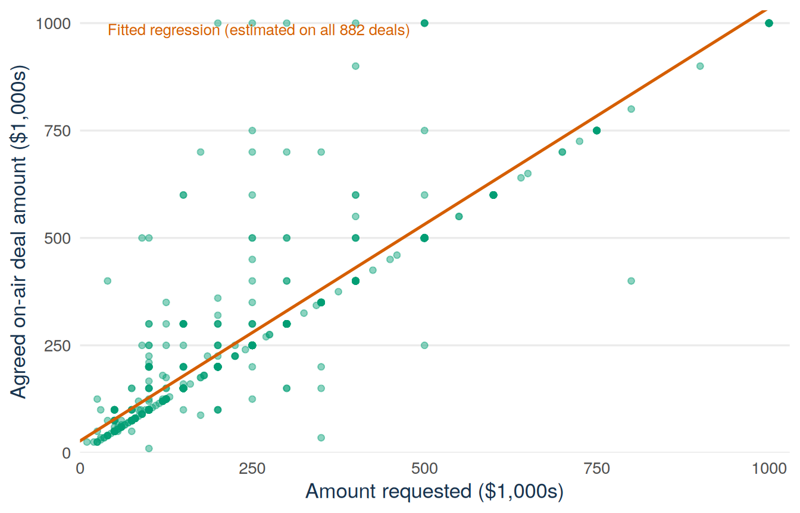
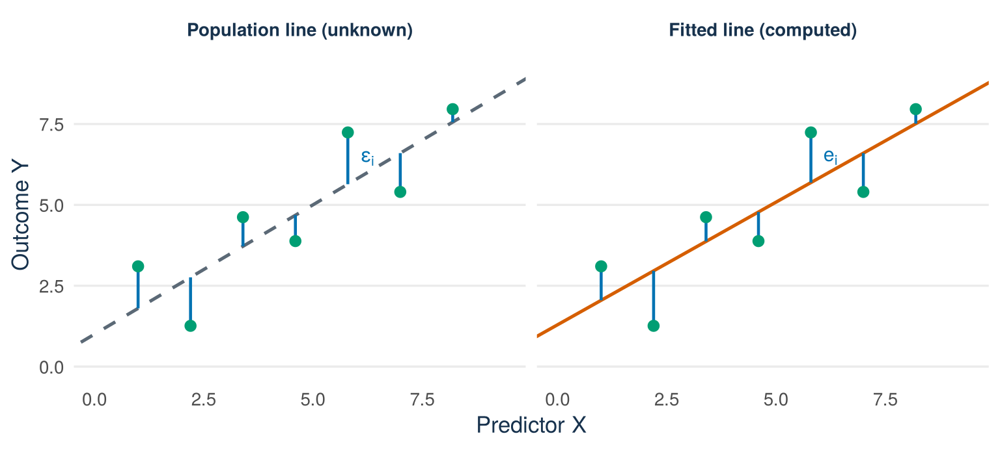
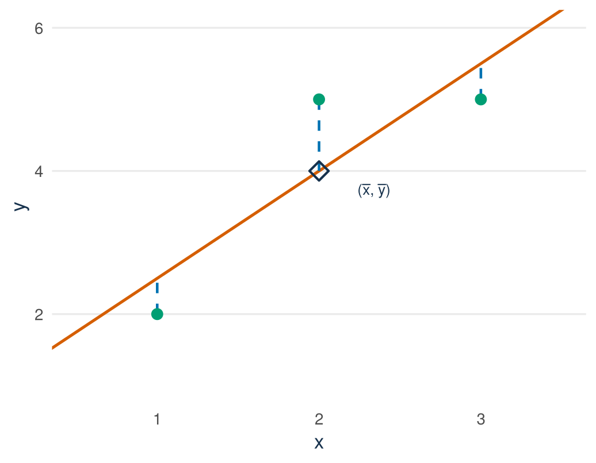

sharks <- read.csv("data/shark_tank_teaching.csv", stringsAsFactors = FALSE)
vals <- subset(sharks, deal_on_show == 1 & deal_equity_pct > 0)
vals$claimed_m <- vals$requested_valuation_usd / 1e6
vals$agreed_m <- vals$deal_valuation_usd / 1e6
plot(vals$claimed_m, vals$agreed_m)Lecture 1: Simple linear regression
By the end of Lecture 1, you can
- explain what a simple regression model describes and what its parts mean
- tell apart the error terms of the model and the residuals of a fit
- explain how least squares chooses the best fitting line
- fit a simple regression in R and interpret the slope and the intercept in the units of the data
Driving question
A founder who asks for money in exchange for a share of the company puts a price on the whole company. This price is the claimed valuation: the amount asked divided by the share offered. Asking 100,000 dollars for 10 percent claims a valuation of 1 million dollars. The deal agreed on air has its own price, the agreed valuation: the amount paid divided by the share the sharks receive. A deal of 100,000 dollars for 20 percent agrees on a valuation of 0.5 million dollars. The slope of the regression line of the agreed valuation on the claimed valuation tells a founder how many dollars of agreed valuation go, on average, with one more dollar of claimed valuation.
Among Shark Tank pitches that ended in a deal for a share of the company, how does the agreed valuation relate to the claimed valuation: how many dollars of agreed valuation go, on average, with one more dollar of claimed valuation?
Before class
Do all the preparation below before class.
Video preparation
Watch Stanford Statistical Learning 3.1 Simple Linear Regression. Focus on the population line, the fitted line, and least squares. The video writes RSS for the quantity this book calls SSE, the sum of squared residuals. All links are also listed in the External Video Guide. The videos explain key ideas in another way and can use a different notation. The lecture material and its notation always come first.
Warm up: five quantities from QM Basic. QM Intermediate builds directly on five quantities from the end of QM Basic: estimate, standard error, t statistic (R calls it t value), p-value, confidence interval. The sections for Lectures 9 and 10 of the QM Basic formula sheet list their formulas. With the sheet open, answer the five items below.
- A study reports an estimate of 12 with standard error 4. What is the t statistic for testing whether the underlying quantity is zero?
- With a large sample, what critical value goes into a 95% confidence interval?
- Compute that 95% interval for the estimate in item 1.
- The p-value is 0.003. Complete: “If the true value were zero, …”
- Which of the five quantities has the same units as the estimate itself?
Check your preparation
- \(t = 12/4 = 3\).
- About 1.96. The critical value \(t_{0.975,\,df}\) is close to \(z_{0.975}=1.96\) when the degrees of freedom are large.
- \(12 \pm 1.96 \times 4 = (4.2,\; 19.8)\).
- “… an estimate at least this far from zero would occur in about 0.3% of samples.”
- The standard error and both interval endpoints. The t statistic and p-value are unit-free.
Define the variables. The data of this course are 1,441 pitches from the television show Shark Tank, where founders ask investors (the sharks) for money in exchange for a share of their company. This lecture uses the 874 pitches that ended in a deal for a share of the company. It measures all money in millions of dollars:
- \(X_i\): the valuation the founder claimed, in $ millions. Asking $100,000 for 10% claims $1 million, so \(X_i = 1\).
- \(Y_i\): the valuation agreed on air (during the show), in $ millions. A deal of $100,000 for 20% values the company at $0.5 million, so \(Y_i = 0.5\).
Predict. Answer this question before you come to class: what are the sign and the unit of the slope in a regression of the agreed valuation on the claimed valuation, and is the slope above or below 1? Choose one answer before class. The lecture material gives the correct answer.
R warm-up. Every Intermediate lecture has a short R warm-up: you run a few lines of R and bring the output to class. This week, load the data, keep the deals for a share of the company, and plot the agreed valuation against the claimed valuation:
Code along (bring your laptop). Bring a charged laptop with RStudio and the course project open. The code of the lecture is in this chapter, ready to copy, so you can run each step yourself during the lecture and get the same numbers and figures.
If you are not sure about lines, slopes, intercepts, or subscripts, review Mathematics Refresher: straight lines, slopes, and intercepts and subscripts and indices.
Lecture material
This section fits the regression line to the valuations in the Shark Tank data. Many straight lines can be drawn through a cloud of points. The regression line is the one that fits best by the least-squares criterion: the sum of its squared vertical distances to the points (the residuals) is as small as possible. The section explains what this line describes, how it is calculated, and how to read its slope and its intercept.
Stanford explanation (review): 3.1 Simple Linear Regression.
Start with a founder’s question
A founder who asks $100,000 for 10% of the company claims a valuation of $1 million (claimed_m = 1). If the sharks pay $100,000 for 20%, the agreed valuation is $0.5 million (agreed_m = 0.5). The question is how the agreed valuation relates to the claimed valuation across many deals. Your warm-up plot shows the answer as a cloud of points. The regression line summarises this cloud, and its slope gives one number: the difference in the average agreed valuation per $1 million more of claimed valuation.
Begin with the data
The data are the Shark Tank teaching file. One row is one pitch on the television show: 1,441 pitches from Seasons 1 to 16. This lecture uses the 874 pitches that ended in a deal for a share of the company, and two variables. The valuation claimed by the founder (requested_valuation_usd) is the amount asked divided by the share offered. The valuation agreed on air (deal_valuation_usd) is the amount paid divided by the share the sharks receive. The variable table in Basic Lecture 1 describes every variable of the file.
The code below is the warm-up code. It keeps the deals for a share of the company and creates both valuations in $ millions. Of the 882 deals, 8 gave the sharks no share of the company. These 8 deals have no valuation, so we leave them out. This leaves 874 deals.
sharks <- read.csv("data/shark_tank_teaching.csv", stringsAsFactors = FALSE)
sum(sharks$deal_on_show == 1) # all pitches that ended in a deal[1] 882vals <- subset(sharks, deal_on_show == 1 & deal_equity_pct > 0)
vals$claimed_m <- vals$requested_valuation_usd / 1e6
vals$agreed_m <- vals$deal_valuation_usd / 1e6
nrow(vals) # deals for a share of the company[1] 874See the R code for this figure
library(ggplot2)
sharks <- read.csv("data/shark_tank_teaching.csv", stringsAsFactors = FALSE)
vals <- subset(sharks, deal_on_show == 1 & deal_equity_pct > 0)
vals$claimed_m <- vals$requested_valuation_usd / 1e6
vals$agreed_m <- vals$deal_valuation_usd / 1e6
val_model <- lm(agreed_m ~ claimed_m, data = vals)
display_vals <- subset(vals, claimed_m <= 10 & agreed_m <= 10)
ggplot(display_vals, aes(x = claimed_m, y = agreed_m)) +
geom_point(alpha = 0.45, size = 1.6, colour = "#009E73") +
geom_abline(intercept = coef(val_model)[1],
slope = coef(val_model)[2],
colour = "#D55E00", linewidth = 0.9) +
geom_abline(intercept = 0, slope = 1, colour = "#5B6976",
linetype = "dashed", linewidth = 0.6) +
annotate("text", x = 6.8, y = 7.5, label = "agreed = claimed",
hjust = 1, colour = "#5B6976", size = 3.2) +
annotate("text", x = 0.3, y = 9.85,
label = "Fitted regression (estimated on all 874 deals)",
colour = "#D55E00", size = 3.4, hjust = 0) +
coord_cartesian(xlim = c(0, 10.3), ylim = c(0, 10.3), expand = FALSE) +
labs(x = "Valuation claimed by the founder ($ millions)",
y = "Valuation agreed on air ($ millions)") +
theme_minimal(base_size = 13) +
theme(
panel.grid.minor = element_blank(),
panel.grid.major.x = element_blank(),
plot.caption = element_text(colour = "#5B6976"),
axis.title = element_text(colour = "#17324D")
)
Each point in Figure 11.1 is one deal. The claimed valuation is on the horizontal axis and the agreed valuation is on the vertical axis. Both axes use units of $1 million. The orange line is the regression line, the line that fits the points best by the least-squares criterion. It shows the average agreed valuation at each claimed valuation, not the result of every deal. The rest of this lecture explains this criterion and how to read the line.
The figure shows 819 of the 874 deals, so that the area with many points is easy to read. The figure leaves out the 55 deals with a valuation above $10 million on at least one axis. R still uses these deals to calculate the orange line. Always say when a graph is zoomed in, that is, when it shows only part of the data. Otherwise readers may think that the displayed range is the complete data.
The code below counts the deals inside the zoomed area. It also gives the percentage of deals in which the agreed valuation is below, equal to, or above the claimed valuation.
sum(vals$claimed_m <= 10 & vals$agreed_m <= 10) # deals shown in the figure[1] 819round(100 * c(below = mean(vals$agreed_m < vals$claimed_m),
equal = mean(vals$agreed_m == vals$claimed_m),
above = mean(vals$agreed_m > vals$claimed_m)), 1)below equal above
81.5 12.8 5.7 Most points lie below the grey dashed line. In 81.5% of the deals the agreed valuation is lower than the valuation the founder claimed. In 12.8% it is the same, and in 5.7% it is higher. The sharks usually pay the amount that the founder asked for, but they take a larger share of the company for it. In this way the agreed valuation ends up lower than the claimed valuation.
Units first: money in millions
Every number in this lecture has the units of these two columns. So we fix the units before we fit any model. We divide the raw dollar valuations by 1,000,000: a claimed valuation of $2,000,000 becomes claimed_m = 2. This change in the units of measurement does not change the relationship between the two valuations. Example 11.2, after the model is fitted, shows what happens to the coefficients when the units change.
The population model and the conditional mean
A regression has an outcome \(Y\), the variable we want to describe, and a predictor \(X\), the variable we describe it with. Here the outcome is the agreed valuation and the predictor is the claimed valuation. Other books, R help pages, and AI assistants use other names for the same things. The outcome is also called the dependent variable or the response. The predictor is also called the independent variable, the explanatory variable, or the regressor. This book always says outcome and predictor. The simple linear regression model is
\[ Y_i=\beta_0+\beta_1X_i+\varepsilon_i. \]
- \(Y_i\) is the outcome for observation \(i\) (here: deal \(i\)).
- \(X_i\) is the predictor for observation \(i\).
- \(\beta_0\) is the population intercept.
- \(\beta_1\) is the population slope.
- \(\varepsilon_i\) is the error term: the part of \(Y_i\) that \(\beta_0+\beta_1X_i\) does not capture. Nobody observes it.
The intercept and the slope are the two coefficients of the model.
The model is a statement about averages. The conditional mean \(E[Y\mid X=x]\) is the average outcome among observations whose predictor equals \(x\). An example is the average agreed valuation among deals in which the founder claimed exactly $2 million. The model says that this average follows a line:
\[ E[Y\mid X=x]=\beta_0+\beta_1x. \]
If you compare two values of the predictor that are one unit apart, the two averages differ by the slope:
\[ \beta_1 =E[Y\mid X=x+1]-E[Y\mid X=x]. \]
Definition
Slope \(\beta_1\). The difference in the average outcome \(Y\) that is associated with a one-unit difference in the predictor \(X\). Its unit is units of \(Y\) per unit of \(X\).
Intercept \(\beta_0\). The average outcome \(Y\) at \(X=0\). It has the units of \(Y\), and it has a useful meaning only if \(X=0\) lies inside the range of the data.
Here the slope is the difference in the average agreed valuation between deals whose claimed valuations differ by $1 million. The words “associated with” matter. A regression line compares averages across groups of observed deals. It does not say what would happen if one founder changed their claimed valuation. The box “What this fitted line can and cannot say” later in this section explains this limit.
You can read the slope as an effect only under one condition: nothing outside the model affects both the claimed and the agreed valuation. Lecture 2 calls this condition zero conditional mean of the error, with no omitted confounder.
Error terms versus residuals
The population line \(\beta_0+\beta_1x\) is part of the model. Nobody can observe it, because \(\beta_0\) and \(\beta_1\) are unknown. In the words of Basic Lecture 7, they are parameters. What we calculate from the data is the fitted line. Its coefficients \(\hat\beta_0\) and \(\hat\beta_1\) have a hat symbol on top. The hat marks an estimate: these are the values that we calculate from the data for the unknown \(\beta_0\) and \(\beta_1\). The rule that turns the data into these numbers is the estimator. Here it is least squares, explained in the next section. The fitted line is
\[ \widehat Y_i=\hat\beta_0+\hat\beta_1X_i. \]
Because least squares chooses it, the fitted line is also called the least-squares line or the regression line. The three names mean the same line.
Definition
Error term \(\varepsilon_i\). The distance of observation \(i\) from the population line: \(\varepsilon_i=Y_i-(\beta_0+\beta_1X_i)\). It belongs to the model and is never observed.
Fitted value \(\widehat Y_i\). The value on the fitted line at the predictor value of observation \(i\): \(\widehat Y_i=\hat\beta_0+\hat\beta_1X_i\).
Residual \(e_i\). The observed outcome minus the fitted value: \(e_i=Y_i-\widehat Y_i\). It is the vertical distance from the point to the fitted line, positive above the line and negative below it. It is calculated from the data.
The error term \(\varepsilon_i\) and the residual \(e_i\) have the same role in the two equations, but they are different quantities, as Figure 11.2 shows. This book uses “error term” only for \(\varepsilon_i\) and “residual” only for \(e_i\).
See the R code for this figure
library(ggplot2)
set.seed(101)
x_er <- c(1, 2.2, 3.4, 4.6, 5.8, 7.0, 8.2)
beta0_true <- 1; beta1_true <- 0.8
y_er <- beta0_true + beta1_true * x_er + c(1.3, -1.5, 0.9, -0.8, 1.6, -1.2, 0.4)
fit_er <- lm(y_er ~ x_er)
panel_names <- c("Population line (unknown)", "Fitted line (computed)")
er_df <- data.frame(
panel = factor(rep(panel_names, each = 7), levels = panel_names),
x = rep(x_er, 2),
y = rep(y_er, 2),
line_y = c(beta0_true + beta1_true * x_er, fitted(fit_er))
)
line_df <- data.frame(
panel = factor(panel_names, levels = panel_names),
intercept = c(beta0_true, coef(fit_er)[1]),
slope = c(beta1_true, coef(fit_er)[2])
)
label_df <- data.frame(
panel = factor(panel_names, levels = panel_names),
x = x_er[5] + 0.45,
y = c((y_er[5] + beta0_true + beta1_true * x_er[5]) / 2,
(y_er[5] + fitted(fit_er)[5]) / 2),
lab = c("epsilon[i]", "e[i]")
)
ggplot(er_df, aes(x = x, y = y)) +
geom_abline(data = line_df[1, ],
aes(intercept = intercept, slope = slope),
colour = "#5B6976", linewidth = 0.9, linetype = "dashed") +
geom_abline(data = line_df[2, ],
aes(intercept = intercept, slope = slope),
colour = "#D55E00", linewidth = 0.9) +
geom_segment(aes(xend = x, yend = line_y),
colour = "#0072B2", linewidth = 0.8) +
geom_point(size = 2.6, colour = "#009E73") +
geom_text(data = label_df, aes(x = x, y = y, label = lab),
parse = TRUE, colour = "#0072B2", size = 4) +
coord_cartesian(xlim = c(0, 9.4), ylim = c(0, 9.4)) +
facet_wrap(~ panel) +
labs(x = "Predictor X", y = "Outcome Y") +
theme_minimal(base_size = 13) +
theme(
panel.grid.minor = element_blank(),
panel.grid.major.x = element_blank(),
plot.caption = element_text(colour = "#5B6976"),
axis.title = element_text(colour = "#17324D"),
strip.text = element_text(colour = "#17324D", face = "bold")
)
- \(\varepsilon_i = Y_i - (\beta_0+\beta_1X_i)\) measures the distance to the population line. Because \(\beta_0\) and \(\beta_1\) are unknown, \(\varepsilon_i\) is never observed.
- \(e_i = Y_i - (\hat\beta_0+\hat\beta_1X_i)\) measures the distance to the fitted line. It is computed from data, one number per observation.
We never see the error terms. The residuals are what we can calculate in their place, so they are estimates of the error terms and not the error terms themselves. Lecture 2 uses residuals to check the model.
Check: which object is observable?
Only the residual \(e_i\). The observed data give \(Y_i\) and \(X_i\). The fitted line gives \(\widehat Y_i\), so \(e_i = Y_i - \widehat Y_i\) is a computable number. The error term \(\varepsilon_i\) depends on the unknown population coefficients \(\beta_0\) and \(\beta_1\), so we can think about it but we can never calculate it.
Least squares: why vertical, why squared
Many lines can be drawn through a cloud of points. To choose one, we need a criterion: a number that says how far a line lies from the points. The residuals measure these distances. Each residual is measured vertically, in the units of the outcome: millions of dollars of agreed valuation, not distance on the page. We measure vertically because we use the line to describe \(Y\) at a given \(X\). So the distance that counts is a distance in \(Y\).
Adding up the residuals is not a useful criterion, because positive and negative residuals cancel. Adding up their absolute values avoids this, but then there is no simple formula for the best line. Squared residuals are never negative, they count a large residual more heavily than a small one, and they lead to a direct formula for the best line. For these reasons squaring is the standard choice. But it is not the only possible choice.
Definition
SSE. The sum of the squared residuals of a line. The letters come from its usual name, “sum of squared errors”, although it adds up squared residuals.
\[ \operatorname{SSE}=\sum_{i=1}^{n}e_i^2 =\sum_{i=1}^{n}(Y_i-\hat\beta_0-\hat\beta_1X_i)^2. \]
Ordinary least squares (OLS). The rule that chooses the intercept \(\hat\beta_0\) and the slope \(\hat\beta_1\) so that SSE is as small as possible. The resulting line is called the least-squares line.
Try it yourself: make SSE as small as you can
Drag either square handle to move the line. The vertical dashed lines are the residuals. The SSE below the figure changes every time you move the line. Find the line with the smallest SSE that you can. Then click “Show least-squares fit” to see the line with the smallest possible SSE, and compare it with your best attempt.
Least-squares line lab
Squaring makes every contribution to SSE zero or positive. A residual that is twice as long adds four times as much to SSE.
The formulas for the slope and the intercept
You do not have to find the least-squares line by trying many lines. There is a direct formula for the slope and one for the intercept, so no search is needed.
In words, the slope compares two amounts: how much \(Y\) moves together with \(X\), and how much \(X\) moves at all. Two quantities from QM Basic measure them.
- The sample variance of \(X\), written \(s_X^2\), measures how far the values of \(X\) spread around their mean \(\bar x\). Its square root \(s_X\) is the standard deviation. Basic Lecture 3 explains the variance and the standard deviation.
- The sample covariance of \(X\) and \(Y\), written \(s_{XY}\), measures whether \(X\) and \(Y\) move together. It is positive when high values of \(X\) go with high values of \(Y\), and negative when high values of \(X\) go with low values of \(Y\). Basic Lecture 5 explains the covariance and the correlation.
The variance is an average of squared deviations from the mean. The covariance is an average of products of deviations. Both divide by \(n-1\) in place of \(n\):
\[ s_X^2=\frac{1}{n-1}\sum_{i=1}^{n}(x_i-\bar x)^2, \qquad s_{XY}=\frac{1}{n-1}\sum_{i=1}^{n}(x_i-\bar x)(y_i-\bar y). \]
The slope is the covariance of \(X\) and \(Y\) divided by the variance of \(X\):
\[ \hat\beta_1=\frac{s_{XY}}{s_X^2}. \]
The covariance has the units of \(X\) times the units of \(Y\), and the variance has the squared units of \(X\). So their ratio has the units of a slope: units of \(Y\) per unit of \(X\).
The same slope can be written with the correlation \(r_{XY}=s_{XY}/(s_X s_Y)\). The correlation is the covariance rescaled so that it has no units and lies between \(-1\) and \(1\). Then
\[ \hat\beta_1=r_{XY}\,\frac{s_Y}{s_X}. \]
In words: the slope is the correlation, rescaled into units of \(Y\) per unit of \(X\). Two facts follow from this. The slope always has the sign of the correlation, because standard deviations are positive. And if \(X\) and \(Y\) are both standardised, so that each has standard deviation 1, the slope is equal to the correlation.
The intercept is chosen so that the line passes through the point of means \((\bar x,\bar y)\):
\[ \hat\beta_0=\bar y-\hat\beta_1\bar x. \]
You can check this by putting \(x=\bar x\) into the fitted line: \(\hat\beta_0+\hat\beta_1\bar x=\bar y\). At the average value of \(X\), the line gives the average value of \(Y\).
Example 1.1 (Worked example: least squares by hand on three points) Three observations: \((1,2)\), \((2,5)\), \((3,5)\). We write out every sum.
Means. \(\bar x = (1+2+3)/3 = 2\) and \(\bar y = (2+5+5)/3 = 4\).
Deviations and their products.
| \(i\) | \(x_i-\bar x\) | \(y_i-\bar y\) | \((x_i-\bar x)(y_i-\bar y)\) | \((x_i-\bar x)^2\) | \((y_i-\bar y)^2\) |
|---|---|---|---|---|---|
| 1 | \(-1\) | \(-2\) | \(2\) | \(1\) | \(4\) |
| 2 | \(0\) | \(1\) | \(0\) | \(0\) | \(1\) |
| 3 | \(1\) | \(1\) | \(1\) | \(1\) | \(1\) |
| Sum | \(3\) | \(2\) | \(6\) |
Covariance and variance. Divide the sums by \(n-1=2\). The covariance is \(s_{XY} = 3/2 = 1.5\) and the variance of \(X\) is \(s_X^2 = 2/2 = 1\).
Slope: the covariance divided by the variance of \(X\).
\[ \hat\beta_1 = \frac{s_{XY}}{s_X^2} = \frac{1.5}{1} = 1.5. \]
The same slope from the correlation. The standard deviations are \(s_X=\sqrt{1}=1\) and \(s_Y=\sqrt{6/2}\approx 1.732\), so the correlation is \(r_{XY}=1.5/(1\times 1.732)\approx 0.866\). Then
\[ \hat\beta_1 = r_{XY}\,\frac{s_Y}{s_X} = 0.866\times\frac{1.732}{1} = 1.5. \]
Intercept: the line passes through the point of means.
\[ \hat\beta_0 = \bar y - \hat\beta_1\bar x = 4 - 1.5\times 2 = 1. \]
The fitted line is \(\widehat y = 1 + 1.5x\). Figure 11.3 shows that the line passes exactly through the point of means \((\bar x,\bar y)=(2,4)\). The residuals are \(-0.5\), \(+1\), and \(-0.5\). They sum to zero, as least-squares residuals always do when the model has an intercept.
See the R code for this figure
library(ggplot2)
x_toy <- c(1, 2, 3); y_toy <- c(2, 5, 5)
toy_fit <- lm(y_toy ~ x_toy)
toy_df <- data.frame(x = x_toy, y = y_toy, fitted = fitted(toy_fit))
ggplot(toy_df, aes(x = x, y = y)) +
geom_abline(intercept = coef(toy_fit)[1], slope = coef(toy_fit)[2],
colour = "#D55E00", linewidth = 0.9) +
geom_segment(aes(xend = x, yend = fitted),
colour = "#0072B2", linewidth = 0.8, linetype = "dashed") +
geom_point(size = 3, colour = "#009E73") +
annotate("point", x = 2, y = 4, shape = 5, size = 3.4, stroke = 1.1,
colour = "#17324D") +
annotate("text", x = 2.34, y = 3.72,
label = "'('*bar(x)*', '*bar(y)*')'", parse = TRUE,
colour = "#17324D", size = 3.4) +
coord_cartesian(xlim = c(0.5, 3.5), ylim = c(1, 6)) +
labs(x = "x", y = "y") +
theme_minimal(base_size = 13) +
theme(
panel.grid.minor = element_blank(),
panel.grid.major.x = element_blank(),
plot.caption = element_text(colour = "#5B6976"),
axis.title = element_text(colour = "#17324D")
)
You can verify the hand calculation in R:
x_toy <- c(1, 2, 3); y_toy <- c(2, 5, 5)
c(covariance = cov(x_toy, y_toy), variance_x = var(x_toy),
sd_y = sd(y_toy), correlation = cor(x_toy, y_toy)) covariance variance_x sd_y correlation
1.5000000 1.0000000 1.7320508 0.8660254 coef(lm(y_toy ~ x_toy))(Intercept) x_toy
1.0 1.5 Fit and read the Shark Tank model in R
Now the Shark Tank data. The function lm() (for “linear model”) fits the least-squares line. Its first argument is a formula of the form outcome ~ predictor. The block below loads the data again, so you can run it on its own:
sharks <- read.csv("data/shark_tank_teaching.csv", stringsAsFactors = FALSE)
vals <- subset(sharks, deal_on_show == 1 & deal_equity_pct > 0)
vals$claimed_m <- vals$requested_valuation_usd / 1e6
vals$agreed_m <- vals$deal_valuation_usd / 1e6
val_model <- lm(agreed_m ~ claimed_m, data = vals)
coef(val_model)(Intercept) claimed_m
-0.06798986 0.64874084 The fitted equation is approximately
\[ \widehat{\text{agreed valuation}} =-0.068+0.649\times\text{claimed valuation}, \]
with both valuations measured in $ millions.
R calculated these two numbers with the formulas of the previous section. You can check this with the covariance, the variance, the correlation, and the standard deviations of the two columns:
x <- vals$claimed_m
y <- vals$agreed_m
c(correlation = cor(x, y), sd_x = sd(x), sd_y = sd(y))correlation sd_x sd_y
0.8930528 5.0880676 3.6961276 c(cov_over_var = cov(x, y) / var(x),
cor_times_sd_ratio = cor(x, y) * sd(y) / sd(x),
slope_from_lm = unname(coef(val_model)["claimed_m"])) cov_over_var cor_times_sd_ratio slope_from_lm
0.6487408 0.6487408 0.6487408 c(mean_y_minus_slope_times_mean_x = mean(y) - cov(x, y) / var(x) * mean(x),
intercept_from_lm = unname(coef(val_model)["(Intercept)"]))mean_y_minus_slope_times_mean_x intercept_from_lm
-0.06798986 -0.06798986 Both formulas give the slope 0.649 that lm() reports, and the intercept formula gives \(-0.068\). The second form of the slope also shows why it is below 1. The correlation of the two valuations is 0.893, and the agreed valuations spread less than the claimed ones: their standard deviation is $3.70 million against $5.09 million. So \(\hat\beta_1 = 0.893 \times 3.70/5.09 \approx 0.649\).
The table below shows the observed value, the fitted value, and the residual for the first six rows of the data:
head(data.frame(
observed = vals$agreed_m,
fitted = fitted(val_model),
residual = residuals(val_model)
)) observed fitted residual
1 0.090909 0.148256872 -0.05734787
2 0.920000 2.916218011 -1.99621801
6 1.000000 2.094479396 -1.09447940
7 0.250000 1.553862244 -1.30386224
11 0.035000 -0.003115774 0.03811577
12 0.500000 0.742936193 -0.24293619For every row, observed = fitted + residual. Check it on the first row. The founders asked $50,000 for 15%, a claimed valuation of $0.333 million. They agreed to $50,000 for 55%, an agreed valuation of $0.091 million. The fitted value is \(-0.068 + 0.649 \times 0.333 = 0.148\), and indeed \(0.091 = 0.148 + (-0.057)\).
Reading a slope and an intercept
A coefficient is a number with units. The slope is in units of \(Y\) per unit of \(X\), and the intercept is in units of \(Y\). So the same model can give different numbers in different units, and a number without its units says little. The box below gives a fixed way to read both coefficients.
Method: interpreting a slope and an intercept
- Units. Write down the unit of the outcome \(Y\), the unit of the predictor \(X\), and which data the model uses.
- Slope. “Among [the data], a [predictor] that is one [unit of \(X\)] higher is associated with a [outcome] that is on average [\(\hat\beta_1\)] [units of \(Y\)] higher.” For a negative slope, write “lower” and drop the minus sign.
- Intercept. “At [predictor] equal to zero, the fitted [outcome] is [\(\hat\beta_0\)] [units of \(Y\)].” Use this sentence only if \(X=0\) lies inside the range of the data. Otherwise say that the intercept has no useful meaning of its own.
- Words. Say “is associated with” and “on average”. Do not use causal words such as “increases”, “leads to”, “the effect of”, or “if you raise”.
The slope, with units. In the Shark Tank model both valuations are in $ millions. Among the 874 deals for a share of the company, a claimed valuation that is $1 million higher is associated with an agreed valuation that is on average about $0.65 million higher. Both valuations have the same unit, so the slope also reads per dollar: each extra dollar of claimed valuation goes with about 65 cents more agreed valuation, on average. This answers the prediction question from before class. The sign is positive, the unit is millions of dollars agreed per million claimed, and the slope is clearly below 1. The slope does not mean that claiming more causes the sharks to pay more.
The intercept, with units. At a claimed valuation of zero, the fitted agreed valuation is about \(-\$68{,}000\). A company claimed to be worth nothing is not in the data (the smallest claimed valuation is $40,000), and a negative valuation has no meaning. The line needs an intercept so that it is at the right height. But this intercept has no useful meaning of its own.
Thousands and millions: rescaling a variable
Money is often reported in thousands or millions. A change of unit multiplies every value of a variable by the same number \(c\). For example, going from dollars to $1,000s divides every value by 1,000, so \(c=1/1{,}000\). The fitted line itself does not change. Only the numbers that describe it change, by a simple rule:
- multiply only the outcome by \(c\): the intercept and the slope are both multiplied by \(c\)
- multiply only the predictor by \(c\): the slope is divided by \(c\), and the intercept stays the same
- multiply both by \(c\): the intercept is multiplied by \(c\), and the slope stays the same.
An invented example shows the second case. A web shop regresses its weekly orders on its weekly advertising spending in euros and finds a slope of 0.15 orders per euro. With spending measured in 1,000s of euros, every value of the predictor is divided by 1,000, so the slope is multiplied by 1,000: 150 orders per 1,000 euros. Both numbers say the same thing. The code sheet lists the rule as a table.
Example 1.2 (Worked example: the same coefficients in three unit systems) The fitted intercept is about \(-0.068\) and the fitted slope is about \(0.649\), with both valuations in $ millions. Read the intercept in dollars first:
\[ -0.068 \text{ (in \$ millions)} = -0.068 \times \$1{,}000{,}000 = -\$68{,}000. \]
Suppose a report measures both valuations in $1,000s. Every value of \(Y\) and of \(X\) is then 1,000 times as large. This is the third case of the rule. The intercept has the units of \(Y\), so it is multiplied by 1,000. The slope is a ratio, units of \(Y\) per unit of \(X\). Both parts of the ratio change by the same factor, so the slope stays the same:
\[ \text{intercept: } -0.068 \times 1000 = -68 \text{ (in \$1,000s)}, \qquad \text{slope: } 0.649 \text{ (unchanged)}. \]
R confirms this result:
vals$claimed_k <- vals$claimed_m * 1000 # claimed valuation in $1,000s
vals$agreed_k <- vals$agreed_m * 1000 # agreed valuation in $1,000s
coef(lm(agreed_k ~ claimed_k, data = vals))(Intercept) claimed_k
-67.9898584 0.6487408 The sentence for the slope now uses the new unit. Among the 874 deals, a claimed valuation that is $1,000 higher is associated with an agreed valuation that is on average about $649 higher. In raw dollars, the intercept is \(-68{,}000\) dollars and the slope is again 0.649: dollars of agreed valuation per dollar of claimed valuation. When two sources disagree about a coefficient, check the units first.
Percent and percentage points
Some outcomes are percentages, such as the equity offered or a conversion rate (the percentage of visitors who buy). The slope is then in percentage points per unit of \(X\). A percentage point is the difference between two percentages. A conversion rate that falls from 3.0% to 2.6% falls by 0.4 percentage points. In percent of its old value, the same fall is about 13%. The two statements are different, so always say which one you mean.
An invented example. A web shop regresses its daily conversion rate (in %) on the loading time of its website (in seconds) and finds a slope of \(-0.4\). The sentence is: days with a loading time that is one second longer are associated with a conversion rate that is on average 0.4 percentage points lower. “0.4 percent lower” would be wrong. At a conversion rate of 3.0%, the difference of 0.4 percentage points is about 13% of the rate.
A predictor that is 0 or 1
A predictor can also record yes or no, coded 1 for yes and 0 for no. Such a predictor is called a dummy variable. Other names are indicator variable and binary variable. You know the idea from QM Basic: the deal indicator was 1 for a pitch with a deal and 0 for a pitch without one. The word “dummy” means that the variable stands in for a category, such as “deal” or “campaign week”, so that a category can enter a regression as a number. For a dummy, “one unit higher” means the step from 0 to 1. The intercept is then the average outcome in the group with \(X=0\). The slope is the difference in the average outcome between the group with \(X=1\) and the group with \(X=0\): a difference in means.
An invented example. A web shop regresses its weekly orders on a dummy that is 1 in weeks with a discount campaign. The intercept is 200 and the slope is 35. Weeks without a campaign have on average 200 orders. Weeks with a campaign have on average 35 orders more, that is 235, or about 18% more. Lecture 5 treats such predictors in detail.
Prediction inside the range of the data
The function predict() calculates the fitted value for a new value of the predictor:
predict(val_model, newdata = data.frame(claimed_m = 2)) 1
1.229492 range(vals$claimed_m) # smallest and largest claimed valuation[1] 0.04 50.00For a claimed valuation of $2 million (claimed_m = 2), the fitted agreed valuation is about 1.23, that is, $1.23 million. This value is the average that the model gives for such deals. It is not a guarantee for a new pitch. If such a deal was agreed on air at a valuation of $1 million, its residual would be
\[ e = 1.00 - 1.23 = -0.23, \]
about $230,000 below the fitted value. Use predictions only inside the range of the data. The claimed valuations run from $40,000 to $50 million. Outside this range there are no deals to support the line. A prediction there depends only on the assumption that the line continues.
Try it: a fitted value and a residual
Try this with your neighbour first. A founder claims a valuation of $8 million, and the deal closes at a valuation of $6 million.
Step 1 (given). The fitted equation is \(\widehat{\text{agreed}}=-0.068+0.649\times\text{claimed}\), in $ millions.
Step 2 (you). Calculate the fitted agreed valuation.
Step 3 (you). Calculate the residual and say what its sign means.
Check your answer
Fitted: \(-0.068+0.649\times8=5.12\), about $5.12 million. Residual: \(6-5.12=0.88\), about $880,000. The sign is positive: this deal was agreed above the fitted value. R confirms the residual:
unname(6 - predict(val_model, newdata = data.frame(claimed_m = 8)))[1] 0.8780631What this fitted line can and cannot say
- The slope 0.649 describes how deals differed. Founders who claim more also differ in sales, stage, and industry.
- Only pitches that reached a deal are in the data.
- The model does not say what happens if you raise your own claim.
What you can do with it: expect each extra dollar you claim to go with only about two thirds of a dollar more in the agreed valuation, and prepare your negotiation for that.
From an association to a decision
The box above protects you from one mistake: reading a description as a promise. It does not make the slope useless. Founders and managers decide with imperfect evidence every day. Three questions help.
- How expensive is a wrong decision, and can I undo it? If the action is cheap and easy to undo, act on the association and watch what happens. If the action is expensive or hard to undo, ask for more evidence first.
- What else differs between the cases I compare? Founders who claim more also differ in sales, stage, and industry. Lecture 4 shows how to hold measured differences fixed.
- Can I test it myself? A founder can often change one feature on purpose for some customers and not for others. Chance decides which customers get the change. Lecture 5 shows how to read such a test.
Answering the driving question
Among the 874 Shark Tank deals for a share of the company, the agreed valuation rises with the claimed valuation, but less than one for one. The slope of the regression line is 0.649. So one more dollar of claimed valuation goes with about 65 cents more agreed valuation, on average. In the units of the model: each extra $1 million of claimed valuation is associated with about $0.65 million more agreed valuation. For a founder, about two thirds of each extra claimed dollar shows up in the agreed valuation. The limits in the box “What this fitted line can and cannot say” still apply.
A founder’s decision (invented example)
You regress weekly orders on weekly advertising spending in euros and get: fitted orders = 120 + 0.15 × spending. Each extra 100 euros of advertising goes with 15 more orders. You earn 4 euros per order, so 100 euros of advertising goes with 60 euros of extra margin. The decision: at this slope, advertising does not pay for itself, unless new customers come back and order again. The slope turned a feeling that ads help into a number that you can compare with the cost. But the slope only describes your past weeks. Before a large budget change, vary the spending on purpose for a few weeks and see whether the orders follow. Such small planned changes also help to separate the effect of the spending from timing effects, such as the season or the day of the week.
Next: R fits a least-squares line to any data, even to data that a straight line describes badly. R gives no warning. Lecture 2 states the assumptions behind the fitted line and shows how to check them with residual plots.
After class
After the lecture, work through all the practice below.
Read the lecture material
Read the Lecture material section above from start to end. The lecture covered the main points. The text has every step, every example, and all the code, including parts that were not shown in class. Note what is still unclear and bring it to the next tutorial, or ask Tilly.
Recall questions
- What is the difference between \(\varepsilon_i\) and \(e_i\)?
- What does least squares minimise, and why are the residuals squared before they are added up?
- Why must a slope interpretation include units?
- Why can an intercept be calculated correctly and still have no useful meaning?
- Why is the slope not automatically causal?
- The outcome is a conversion rate in percent, and the slope is \(-0.4\). Is the outcome 0.4 percent or 0.4 percentage points lower per unit of the predictor?
Check your answers
- \(\varepsilon_i\) is the error term of the population model: the distance to the unknown population line. It is never observed. \(e_i\) is the residual: the distance to the fitted line, calculated from the data.
- The sum of squared residuals, \(\operatorname{SSE}=\sum_i e_i^2\). In a plain sum the positive and the negative residuals would cancel. Squares are never negative, and they count a large residual more heavily than a small one.
- The slope is a difference in outcome units per one unit of the predictor. Without units the number 0.649 could mean anything.
- The value \(X=0\) may lie outside the observed range, or it may make no sense for the variable.
- The predictor was not randomly assigned, and other factors may affect both variables.
- 0.4 percentage points. The slope of a percentage outcome is a difference between two percentages. A fall of 0.4 percentage points from 3.0% is a fall of about 13% of the rate.
Finish a half-worked example
Re-read the prediction calculation in the chapter (fitted value at claimed_m = 2). Then complete the same calculation for a new claim.
Step 1 (given). A founder claims a valuation of $4 million, so claimed_m = 4. The fitted equation is \(\widehat{\text{agreed}} = -0.068 + 0.649 \times \text{claimed}\).
Step 2 (you). Compute the fitted agreed valuation, in $ millions and in dollars.
Step 3 (you). The deal was actually agreed on air at a valuation of $2 million. Compute the residual and interpret its sign in one sentence.
Check your answer
Fitted: \(-0.068 + 0.649 \times 4 = 2.53\), about $2.53 million. Residual: \(2 - 2.53 = -0.53\), about \(-\$530{,}000\). The negative sign means this deal was agreed below the model’s fitted conditional mean for a claimed valuation of $4 million.
sharks <- read.csv("data/shark_tank_teaching.csv", stringsAsFactors = FALSE)
vals <- subset(sharks, deal_on_show == 1 & deal_equity_pct > 0)
vals$claimed_m <- vals$requested_valuation_usd / 1e6
vals$agreed_m <- vals$deal_valuation_usd / 1e6
val_model <- lm(agreed_m ~ claimed_m, data = vals)
unname(2 - predict(val_model, newdata = data.frame(claimed_m = 4)))[1] -0.5269735Then do five more tasks. These tasks have no given steps:
- Use the fitted equation to predict the agreed valuation for claimed valuations of $1 million and $10 million.
- Calculate the residual for a deal with a claimed valuation of $2 million and an agreed valuation of $1 million.
- Explain why
lm(y ~ x, data = dat)treats the variable left of~as the outcome. - A report keeps the agreed valuation in $ millions but measures the claimed valuation in $1,000s. Which intercept and which slope does it report? Use the rule of Example 11.2.
- Under which condition could the slope 0.649 be read as the effect of a higher claim? Name one factor outside the model that breaks this condition for the Shark Tank deals.
Check your answers
- Substitute
claimed_m = 1andclaimed_m = 10. The fitted values are about 0.58 and 6.42 in $ millions. - The fitted valuation is about 1.23 in $ millions, so the residual is \(1-1.23\approx-0.23\), or about \(-\$230{,}000\).
- R formulas use
outcome ~ predictors: the left-hand side is what the model predicts. The right-hand side is what the model uses to predict it. - Only the predictor is rescaled, by the factor 1,000. The slope is divided by 1,000: \(0.649/1000 = 0.000649\) million dollars of agreed valuation per $1,000 claimed, which is $649 per $1,000. The intercept stays at \(-0.068\), because the outcome keeps its units.
- The condition: nothing outside the model affects both the claimed and the agreed valuation. Here it fails. A company with high sales can claim a higher valuation, and the sharks also agree to a higher valuation for it. The slope then mixes the effect of the claim with the effect of the sales.
The R check for task 4:
sharks <- read.csv("data/shark_tank_teaching.csv", stringsAsFactors = FALSE)
vals <- subset(sharks, deal_on_show == 1 & deal_equity_pct > 0)
vals$claimed_k <- vals$requested_valuation_usd / 1e3 # in $1,000s
vals$agreed_m <- vals$deal_valuation_usd / 1e6 # in $ millions
coef(lm(agreed_m ~ claimed_k, data = vals)) (Intercept) claimed_k
-0.0679898584 0.0006487408 Practice: a regression of your own
Fit equity_offered_pct ~ season on the full dataset (all 1,441 pitches) and interpret both coefficients with units. State the unit of every quantity you report.
Check your answers
sharks <- read.csv("data/shark_tank_teaching.csv", stringsAsFactors = FALSE)
coef(lm(equity_offered_pct ~ season, data = sharks))(Intercept) season
20.4565874 -0.8241241 The fitted intercept is about 20.46% and the slope about \(-0.824\) percentage points per season. Among all 1,441 pitches, a season that is one later is associated with an initial equity offer that is on average 0.824 percentage points smaller. The outcome and the intercept are in percent. The predictor is in seasons. The slope is a difference between two percentages, so it is in percentage points per season. The intercept is the fitted value at Season 0, which is outside the data (Seasons 1 to 16), so it has no useful meaning of its own.
Review: one question from QM Basic
An invented example. A market survey of \(n = 400\) customers gives an average willingness to pay of €24.60 with standard error €1.10. Write down the t statistic for testing a benchmark of €22 and the 95% confidence interval, and say in one sentence what the interval estimates.
Check your answer
\(t_{obs}=(24.60-22)/1.10\approx2.36\). With \(df=399\), the closest listed value on the formula sheet is \(t_{0.975,\,120}=1.980\). The interval is \(24.60\pm1.980\times1.10=24.60\pm2.18=(22.42,\ 26.78)\) euros. It is a range of plausible values for the population mean willingness to pay, if the 400 customers are a random sample.
Worked exam interpretation
Exam-style question. An invented example. A model of the monthly revenue of cafés (€1,000s) on their opening hours per week reports \(\widehat{\text{revenue}} = 4.20 + 0.85\,\text{hours}\). Interpret the slope with units, and calculate the fitted value and the residual for a café that is open 40 hours per week and has a monthly revenue of €35,000.
Check a model answer
Among the sampled cafés, an opening time that is one hour per week longer is associated with a monthly revenue that is on average €850 higher. For 40 hours the fitted value is \(4.20+0.85\times40=38.2\), about €38,200. The residual is \(35-38.2=-3.2\), about \(-\)€3,200: the observed revenue is below the fitted value.
Check the AI
You asked an AI assistant: “The slope of my valuation regression is 0.649 and the intercept is -0.068. What do they mean for my pitch?” It answered:
“If you raise your claimed valuation by 1 million dollars, the sharks will pay you 649,000 dollars more. And a company with a claimed valuation of zero gets -68,000 dollars.”
Find what is wrong and write the corrected answer. This task is the Verify step of Attempt → Ask → Verify → Explain.
Check your answer
Three errors. The slope describes how deals differed. It does not say what happens if you change your own claim, because stronger companies both claim more and get more. The outcome is the agreed valuation of the company, not money paid to the founder. And a claimed valuation of zero is outside the data, so the intercept has no meaning of its own.
Make it yours
Two sentences about your own venture
Think of your EiA3 venture, or any business you know well. Name one numerical outcome and one numerical input that you think affects it. Then write two sentences. First, state the slope you would expect (sign and units). Second, say what decision would change if the fitted slope turned out to be near zero. There is no wrong answer.
See an example, then write your own
Take a student venture that sells boxes of prepared meals on campus. “Outcome: weekly orders. Input: euros spent on social-media advertising that week. I expect a positive slope of a few orders per extra €100. If the fitted slope came out near zero, I would move the whole budget to campus flyers.”
You can discuss this task, and any other task in this chapter, with Tilly for QM Intermediate, the course AI assistant: ask it what else, besides your input, could affect your outcome.
More practice
For extra exercises on this lecture, with worked solutions, ask Tilly for QM Intermediate, the course AI assistant. For example: “Give me an extra exercise for Intermediate Lecture 1. Show the solution only after I send my answer.”
Continue to Lecture 2: What the model assumes and how residuals reveal it.
Code sheet: Lecture 1 commands and formulas.
For a more formal treatment, see James et al., An Introduction to Statistical Learning, 2nd ed., Sections 3.1 and 3.6.2, and Nieuwenhuis, Statistical Methods for Business and Economics, Chapter 19.